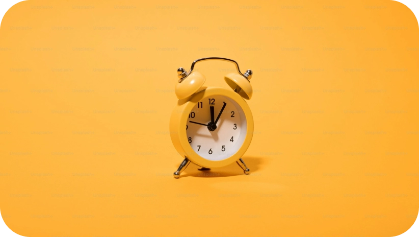

1. Se fixer des limites: une necessité numérique
À l’ère de la connexion permanente, apprendre à se fixer des limites est devenu un acte de lucidité et de protection. Contrairement à ce que l’on croit, les réseaux sociaux ne se consomment pas «naturellement» : ils sont conçus pour capter notre attention, la retenir, et la monétiser. Résultat : nous y passons souvent plus de temps que prévu, au détriment d’activités essentielles (sommeil, échanges réels, travail, repos mental). Se fixer des limites, c’est reprendre le contrôle. Concrètement, cela passe par :
-
L’installation de temps d’écran hebdomadaires avec alerte.
-
L’utilisation de plages horaires sans notifications (ex. : après 20h).
-
Le choix d’objectifs concrets : «Pas plus de 30 minutes sur TikTok», «Pas de réseaux le matin avant 9h».
-
L'identification des moments à risque : soirées, périodes d’ennui, stress.
-
L’implication de l’entourage : créer des temps sans téléphone à plusieurs (repas, sorties).
-
Fixer une limite, ce n’est pas se priver : c’est préserver son espace mental.
2. Retrouver un équilibre sain entre vie réelle et vie numérique
Les réseaux sociaux occupent une place centrale dans nos vies. Mais lorsqu’ils empiètent sur le sommeil, la concentration ou les relations humaines, un déséquilibre s’installe. Retrouver une harmonie entre vie connectée et vie réelle demande une prise de conscience… et quelques ajustements simples mais puissants. Voici quelques piste:
-
Identifier les signaux d’alerte : irritabilité, perte de sommeil, procrastination, isolement social.
-
Créer des zones sans écrans : chambre, table à manger, trajets courts.
-
Favoriser les interactions physiques : voir ses amis, marcher, discuter sans écran interposé.
-
Privilégier les usages actifs : apprendre, créer, échanger… plutôt que scroller passivement.
-
Prendre des pauses numériques régulières : une journée sans réseau par semaine, par exemple.
-
Un équilibre sain, c’est une vie dans laquelle le numérique ne remplace pas l’essentiel, mais le complète de manière consciente.

3. Comprendre l’addiction aux réseaux sociaux : mécanismes et solutions
L’addiction aux réseaux sociaux ne relève pas seulement d’un manque de volonté : elle s’appuie sur des mécanismes neurologiques puissants. Chaque «like», chaque notification active dans notre cerveau le circuit de la récompense, via la dopamine. C’est ce qui donne cette impression de manque, de besoin de «juste encore cinq minutes». Pour sortir de cette dépendance, il faut:
-
Prendre conscience de son propre usage (temps d’écran, émotions ressenties).
-
Accepter l’inconfort du manque au début.
-
Se tourner vers d'autres sources de plaisir (sport, musique, nature, création).
-
Demander de l’aide si besoin : professionnels de santé, proches, associations.
Comprendre, c’est le premier pas. Agir, c’est retrouver sa liberté.